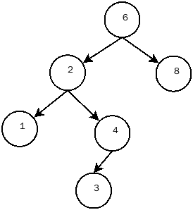
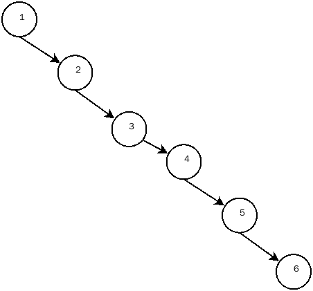

二叉查找树是二叉树的特殊形式，主要性质是，对于树中的每个节点X，它的左子树中所有值小于X的值，而它的右子树中所有值大于X的值
因此，二叉查找树可以用某种统一的方式排序

根据这一性质，可以对二叉查找树有如下的函数定义
1
2
3
4
5
6
7
8
9
10
11
12
13
14
15
16
17
18
19
20
21
22
|
struct TreeNode;
typedef struct TreeNode* Position;
typedef struct TreeNode* SearchTree;
typedef int ElementType;
SearchTree MakeEmpty(SearchTree T);
Position Find(ElementType X,SearchTree T);
Position FindMin(SearchTree T);
Position FindMax(SearchTree T);
SearchTree Insert(ElementType X,SearchTree T);
SearchTree Delete(ElementType X,SearchTree T);
ElementType Retrieve(Position P);
Position FindPositionUp(SearchTree T,ElementType X);
typedef int ElementType;
struct TreeNode{
ElementType Element;
SearchTree Left;
SearchTree Right;
};
|
函数实现
二叉查找树中最主要的两个功能就是插入数据和删除数据，在插入和删除数据之后需要保持整个二叉查找树任然具备二叉查找树的性质，这是很关键的
插入功能的实现
根据二叉查找树的性质，那么要插入的数据是出入叶子节点
实现算法如下:
- 判断插入元素与根节点元素的大小:
- 如果被插入的树是空树，那么分配内存空间并将新节点插入空树中;
- 如果插入元素大于根节点元素，使用递归的方式将插入元素插入到根节点的右子树上;
- 如果插入元素小于根节点元素，使用递归的方式将插入元素插入根节点的左子树上;
- 如果插入元素等于根节点元素，什么也不做
代码实现如下
1
2
3
4
5
6
7
8
9
10
11
12
13
14
15
16
| SearchTree Insert(ElementType X,SearchTree T){
if(T == NULL){
T = (SearchTree)malloc(sizeof(struct TreeNode));
if(T == NULL) {
printf("初始化树失败\n");
return NULL;
}
T->Element = X;
T->Left = T->Right = NULL;
}else if(X < T->Element){
T->Left = Insert(X,T->Left);
}else if(X > T->Element){
T->Right = Insert(X,T->Right);
}
return T;
}
|
删除功能的实现
删除功能相比于插入功能要困难， 如果删除的节点是叶子节点直接删除就行了， 如果删除的节点不是叶子节点，那么就需要找到一个节点来代替这个删除节点继续维持性质
删除功能算法如下:
- 如果删除元素小于根节点元素，就去根节点的左子树删除该元素
- 如果删除元素大于根节点元素，就去根节点的右子树删除该元素
- 如果删除元素等于根节点元素，并且这个根节点还有两个子节点，先找到根节点右子树的最小值(或者根节点左子树的最大值)，将根节点的值修改为右子树的最小值(或者左子树的最大值)，然后去根节点的右子树删除最小值(或者去根节点的左子树删除最大值)。这里实际上把删除一个根节点改变为删除一个叶子节点
- 如果删除元素等于根节点，并且这个根节点只有一个或者没有子节点
4.1 如果根节点只有右节点，将根节点变为右节点
4.2 如果根节点只有左节点，将根节点变为左节点
4.3 如果根节点没有子节点，参照4.1
代码实现如下
1
2
3
4
5
6
7
8
9
10
11
12
13
14
15
16
17
18
19
20
21
22
23
| SearchTree Delete(ElementType X,SearchTree T){
Position ptr = T;
if(T == NULL) return T;
else if(X < T->Element) T->Left = Delete(X,T->Left);
else if(X > T->Element) T->Right = Delete(X,T->Right);
else if(T->Left != NULL && T->Right != NULL){
ptr = FindMin(T->Right);
T->Element = ptr->Element;
T->Right = Delete(T->Element,T->Right);
}else{
ptr = T;
if(T->Left == NULL){
T = T->Right;
}else if(T->Right == NULL){
T = T->Left;
}
free(ptr);
}
return T;
}
|
二叉查找树可以方便的查找，但是在某些情况下，如果在二叉查找树中依次插入 1,2,3,4,5,6，那么得到的二叉查找树图如下:

这样的情况不是我们想看见的，在这种情况下使用平衡二叉树可以改善这个问题
参考源码